학습 목표 (Learning Objectives)
- ✓정상 우주론과 빅뱅(대폭발) 우주론을 비교하고, 빅뱅 우주론의 관측적 증거와 급팽창 이론의 도입 배경을 설명할 수 있다.
- ✓암흑 물질과 암흑 에너지의 발견 과정(은하 회전 곡선, Ia형 초신성 관측)을 이해하고 현대 가속 팽창 우주 모형을 설명할 수 있다.
핵심 개념 체크리스트
학습을 마친 개념은 직접 체크해보세요!
2026 사대부고 고2 지구과학 자체 교재 원문 기반
동기 유발 · 생각해보기
수업 시작 전 핵심 질문
Q. 아인슈타인은 정적 우주를 만들기 위해 중력에 맞서는 척력인 '우주 상수'를 도입했다가, 허블이 우주 팽창을 발견하자 이를 '내 인생 최대의 실수'라며 철회했다. 그런데 약 70년 뒤 아인슈타인의 우주 상수가 현대 우주론의 핵심으로 화려하게 부활한 이유는 무엇일까?
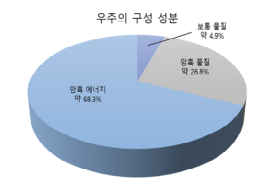
💡 먼저 스스로 이유를 추론해 본 뒤 버튼을 눌러 확인해보세요!
✨ 과학적 해설 및 모범 답안
1998년 먼 우주의 Ia형 초신성 밝기 관측을 통해 우주의 팽창 속도가 중력 때문에 느려지는 것이 아니라 오히려 점점 빨라지는 '가속 팽창'을 하고 있다는 놀라운 사실이 밝혀졌기 때문입니다! 우주를 밀어내며 가속 팽창시키는 미지의 척력인 암흑 에너지(Dark Energy)가 바로 아인슈타인의 우주 상수와 같은 역할을 하고 있었던 것입니다.
핵심 개념 1
1. 대폭발(빅뱅) 우주론과 관측적 증거 (교재 p.75~77)
(1) 빅뱅 우주론 vs 정상 우주론 비교
- •빅뱅 우주론 (가모프) vs 정상 우주론 (호일): 두 우주론 모두 '우주가 팽창한다'는 점은 같지만, 우주가 팽창할 때 총질량, 밀도, 온도의 변화에서 결정적인 차이를 보인다.
| 비교 항목 | 대폭발(빅뱅) 우주론 (가모프) | 정상 우주론 (호일 · 본디 · 골드) |
|---|---|---|
| 우주의 크기 (부피) | 팽창함 (증가) | 팽창함 (증가) |
| 우주의 총질량 | 새로운 물질이 생성되지 않아 일정함 | 빈 공간에서 새로운 물질이 계속 생성되어 증가함 |
| 우주의 평균 밀도 및 온도 | 부피가 커지므로 밀도와 온도가 모두 감소함 | 물질이 계속 채워지므로 밀도와 온도가 항상 일정함 |
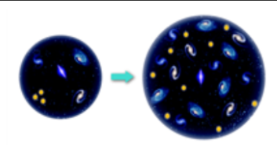
" class="max-h-72 w-auto object-contain rounded-lg group-hover:scale-[1.02] transition duration-300 cursor-zoom-in" onclick="openLightbox(this.src, '교재 그림: <정상 우주론 모형 (밀도 일정)>')" loading="lazy" />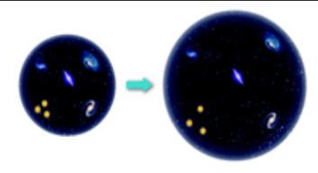
" class="max-h-72 w-auto object-contain rounded-lg group-hover:scale-[1.02] transition duration-300 cursor-zoom-in" onclick="openLightbox(this.src, '교재 그림: <빅뱅 우주론 모형 (밀도·온도 감소)>')" loading="lazy" />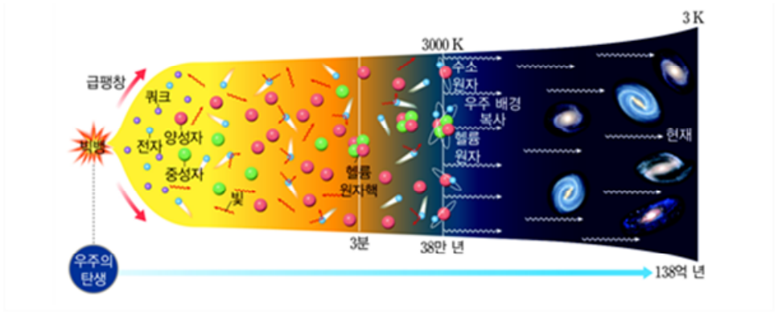
" class="max-h-72 w-auto object-contain rounded-lg group-hover:scale-[1.02] transition duration-300 cursor-zoom-in" onclick="openLightbox(this.src, '교재 그림: <빅뱅 이후 우주의 탄생과 진화 타임라인>')" loading="lazy" />(2) 빅뱅 우주론의 2대 관측적 증거
- •증거 ① 수소와 헬륨의 질량비 ($3 : 1$): 빅뱅 후 약 3분경 양성자와 중성자가 약 $7:1$의 비율로 결합하여 헬륨 원자핵을 합성한 결과, 우주 전체의 수소 원자핵과 헬륨 원자핵의 개수비는 약 $12:1$, 질량비는 약 $3:1$ ($75\% : 25\%$)이 되었으며 실제 천체 스펙트럼 관측 결과와 정확히 일치한다.
- •증거 ② 우주 배경 복사 (CMB, Cosmic Microwave Background): 빅뱅 후 약 38만 년경 우주의 온도가 약 $3,000\text{ K}$으로 낮아지면서 전자가 원자핵에 붙잡혀 중성 원자가 형성되었고, 빛이 물질과 분리되어 우주 공간으로 퍼져 나갔다(우주가 투명해짐). 이후 우주가 팽창하면서 파장이 길어져 현재는 약 $2.7\text{ K}$ 흑체 복사에 해당하는 마이크로파(약 $7\text{ cm}$ 파장 전파)로 우주 모든 방향에서 거의 균일하게 관측된다. (1964년 펜지어스와 윌슨 최초 관측 ➔ COBE ➔ WMAP ➔ 플랑크 위성으로 미세한 온도 편차 정밀 관측)
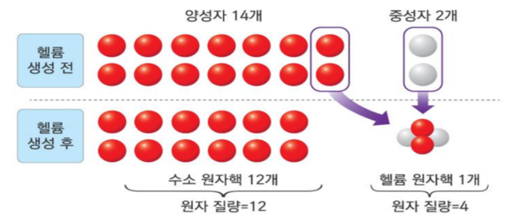
" class="max-h-72 w-auto object-contain rounded-lg group-hover:scale-[1.02] transition duration-300 cursor-zoom-in" onclick="openLightbox(this.src, '교재 그림: <빅뱅 후 3분경 수소와 헬륨 원자핵 합성 (개수비 12:1, 질량비 3:1)>')" loading="lazy" />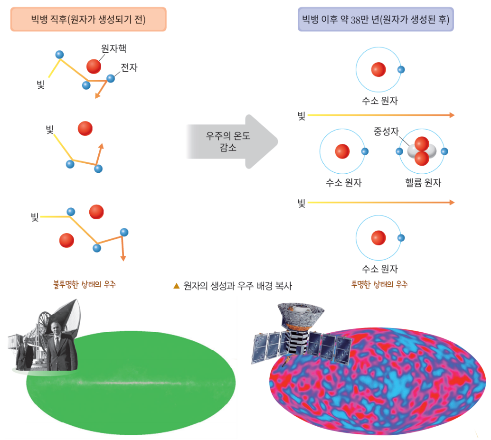
" class="max-h-72 w-auto object-contain rounded-lg group-hover:scale-[1.02] transition duration-300 cursor-zoom-in" onclick="openLightbox(this.src, '교재 그림: <펜지어스와 윌슨의 전파 안테나(1965) 및 COBE 위성 관측(1992)>')" loading="lazy" />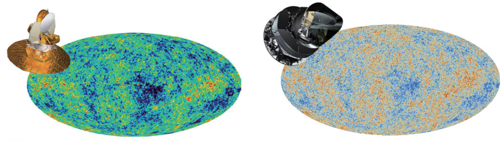
" class="max-h-72 w-auto object-contain rounded-lg group-hover:scale-[1.02] transition duration-300 cursor-zoom-in" onclick="openLightbox(this.src, '교재 그림:
핵심 개념 2
2. 급팽창(인플레이션) 우주론 (교재 p.78~79)
(1) 기존 빅뱅 우주론의 3대 한계점과 급팽창 이론의 해결
- •급팽창(Inflation) 이론: 빅뱅 직후 약 $10^{-35}\text{초} \sim 10^{-32}\text{초}$ 사이에 우주가 빛의 속도보다 훨씬 빠른 속도로 급격히 팽창하여 크기가 $10^{30}\text{배}$ 이상 커졌다는 이론으로 기존 빅뱅 우주론의 3가지 난제를 명쾌하게 해결했다.
| 고전 빅뱅 우주론의 3대 문제점 | 문제의 내용 | 급팽창(인플레이션) 우주론을 통한 해결 원리 |
|---|---|---|
| ① 우주의 지평선 문제 | 서로 반대 방향 끝의 우주는 빛(정보)을 주고받을 시간이 없었음에도 우주 배경 복사의 온도($2.7\text{ K}$)가 모든 방향에서 놀랍도록 균일한 까닭은? | 급팽창 이전에는 우주가 지평선보다 훨씬 작아 서로 빛과 에너지를 충분히 교환하여 온도 평형(균일한 상태)에 도달한 뒤 빛보다 빠르게 급팽창했기 때문! |
| ② 우주의 평탄성 문제 | 현재 우주의 밀도가 임계 밀도($\rho_c$)와 거의 같아 우주의 곡률이 $0$인 완벽에 가까운 평탄한 우주로 관측되는 까닭은? | 초기 우주에 곡률이 있었더라도 풍선이 거대하게 부풀면 표면이 평평해 보이듯 우주가 $10^{30}\text{배}$ 이상 급팽창하여 관측 가능한 우주의 곡률이 $0$(평탄)에 수렴했기 때문! |
| ③ 자기 홀극 문제 | 빅뱅 초기에 다량 생성되었어야 할 자기 홀극(N극 또는 S극만 가진 입자)이 현재 우주에서 전혀 발견되지 않는 까닭은? | 급팽창으로 우주 부피가 상상을 초월할 만큼 커지면서 자기 홀극의 밀도가 극도로 희박해져 관측 가능한 우주 안에서 발견할 확률이 거의 $0$이 되었기 때문! |
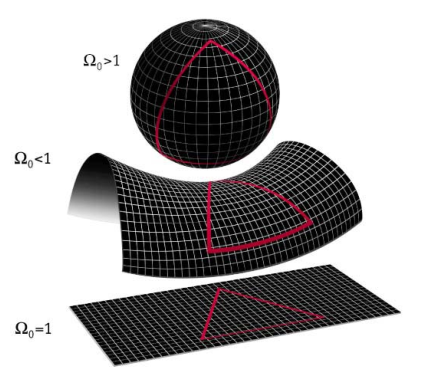
" class="max-h-72 w-auto object-contain rounded-lg group-hover:scale-[1.02] transition duration-300 cursor-zoom-in" onclick="openLightbox(this.src, '교재 그림: <우주의 밀도와 임계 밀도에 따른 우주의 곡률(열린·평탄한·닫힌 우주)>')" loading="lazy" />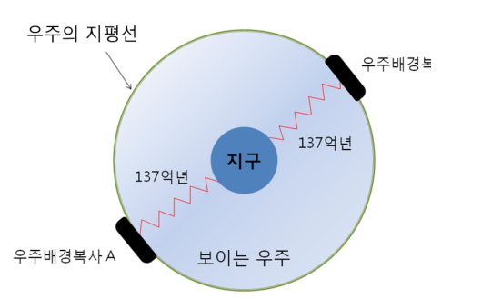
" class="max-h-72 w-auto object-contain rounded-lg group-hover:scale-[1.02] transition duration-300 cursor-zoom-in" onclick="openLightbox(this.src, '교재 그림: <우주의 지평선 문제>')" loading="lazy" />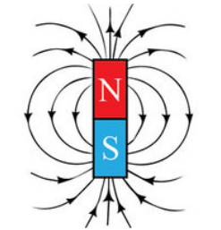
" class="max-h-72 w-auto object-contain rounded-lg group-hover:scale-[1.02] transition duration-300 cursor-zoom-in" onclick="openLightbox(this.src, '교재 그림: <자기 쌍극자와 자기 홀극>')" loading="lazy" />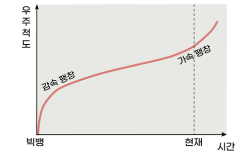
" class="max-h-72 w-auto object-contain rounded-lg group-hover:scale-[1.02] transition duration-300 cursor-zoom-in" onclick="openLightbox(this.src, '교재 그림: <급팽창(인플레이션) 유무에 따른 우주의 크기와 지평선 변화 비교>')" loading="lazy" />
핵심 개념 3
3. 암흑 물질, 암흑 에너지와 가속 팽창 우주 (교재 p.80~81)
(1) 은하 회전 곡선과 암흑 물질 (Dark Matter)
- •발견 배경 (베라 루빈의 나선 은하 회전 속도 관측): 눈에 보이는 물질(별·성간 물질)이 은하 중심부에 집중되어 있다면 중심에서 멀어질수록 회전 속도가 느려져야 한다(케플러 회전). 그러나 실제 관측된 은하 외곽 별들의 회전 속도는 중심에서 멀어져도 줄어들지 않고 거의 일정하게 유지되었다!
- •암흑 물질의 특징: 빛(전자기파)을 방출하거나 흡수하지 않아 눈이나 망원경으로 직접 볼 수 없지만, 질량을 가지고 있어 중력 효과(은하 회전 속도 유지, 중력 렌즈 현상)를 통해서만 존재를 확인할 수 있는 물질로 은하 외곽(헤일로)에 다량 분포한다.
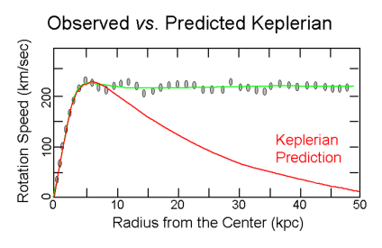
" class="max-h-72 w-auto object-contain rounded-lg group-hover:scale-[1.02] transition duration-300 cursor-zoom-in" onclick="openLightbox(this.src, '교재 그림: <케플러 회전(예측값)과 실제 관측된 우리은하의 회전 속도 곡선>')" loading="lazy" />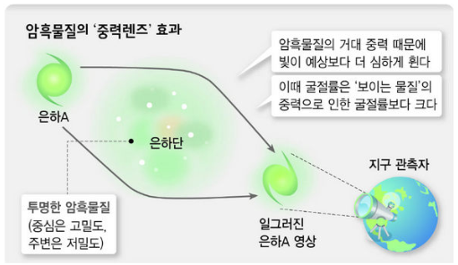
" class="max-h-72 w-auto object-contain rounded-lg group-hover:scale-[1.02] transition duration-300 cursor-zoom-in" onclick="openLightbox(this.src, '교재 그림: <암흑 물질의 중력에 의해 빛이 휘어지는 중력 렌즈 현상>')" loading="lazy" />(2) Ⅰa형 초신성 관측과 암흑 에너지 (Dark Energy) · 가속 팽창 우주
- •Ⅰa형 초신성 (표준 광원): 쌍성계의 백색왜성이 동반성의 물질을 흡수하다가 질량 한계(찬드라세카르 한계, 약 $1.4\,M_\odot$)에 도달할 때 폭발하므로 최대 광도(절대 등급)가 항상 일정하여 먼 은하까지의 거리를 재는 정확한 잣대가 된다.
- •⭐ 가속 팽창의 관측 증거: 먼 거리의 Ⅰa형 초신성을 관측한 결과, 감속 팽창이나 등속 팽창 우주 모형으로 예측한 것보다 초신성이 더 어둡게(즉, 거리가 예상보다 더 멀리!) 관측되었다. 이는 우주의 팽창 속도가 점점 빨라지는 가속 팽창을 하고 있음을 뜻한다.
- •암흑 에너지와 현재 우주의 구성 비율 (플랑크 위성 기준):
▸ 보통 물질 (별·은하·기체·원자): $4.9\%$ (우주 팽창에 따라 밀도 감소)
▸ 암흑 물질 (중력 작용): $26.8\%$ (우주 팽창에 따라 밀도 감소)
▸ 암흑 에너지 (척력 작용 ➔ 가속 팽창 유발): $68.3\%$ (우주가 팽창해도 밀도가 일정하게 유지되어 현재 우주에서 가장 큰 비율을 차지함!)
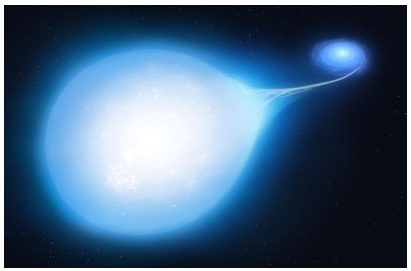
" class="max-h-72 w-auto object-contain rounded-lg group-hover:scale-[1.02] transition duration-300 cursor-zoom-in" onclick="openLightbox(this.src, '교재 그림: <쌍성계 백색왜성의 물질 흡수와 Ⅰa형 초신성 폭발 모식도>')" loading="lazy" />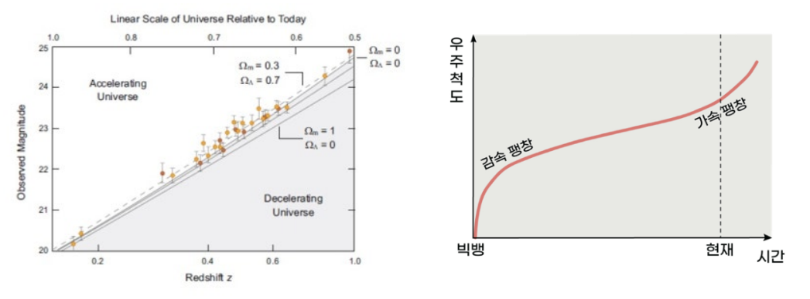
" class="max-h-72 w-auto object-contain rounded-lg group-hover:scale-[1.02] transition duration-300 cursor-zoom-in" onclick="openLightbox(this.src, '교재 그림: <Ⅰa형 초신성 관측 결과와 가속 팽창 우주 모형>')" loading="lazy" />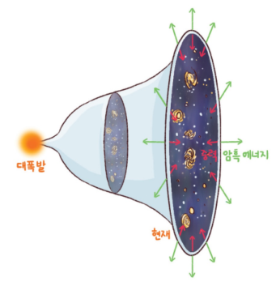
" class="max-h-72 w-auto object-contain rounded-lg group-hover:scale-[1.02] transition duration-300 cursor-zoom-in" onclick="openLightbox(this.src, '교재 그림: <과거 감속 팽창에서 현재 암흑 에너지 우세로 인한 가속 팽창으로의 전환>')" loading="lazy" />
" class="max-h-72 w-auto object-contain rounded-lg group-hover:scale-[1.02] transition duration-300 cursor-zoom-in" onclick="openLightbox(this.src, '교재 그림: <현재 우주의 구성 성분 비율 (암흑 에너지 68.3%, 암흑 물질 26.8%, 보통 물질 4.9%)>')" loading="lazy" />
Interactive Checkpoints
클릭하면 교재 빈칸 정답과 해설이 나타납니다
단원 개념 적용하기 & 확인 문제
Q1
교재 p.76~79 핵심 체크: 빅뱅 우주론을 지지하는 두 가지 결정적인 관측적 증거는 무엇이며, 고전 빅뱅 우주론이 설명하지 못했던 '지평선 문제'와 '평탄성 문제'를 해결한 이론은 무엇인가?
모범 답안 및 해설
• 빅뱅 우주론의 2대 관측적 증거: ① 우주 전역의 수소와 헬륨의 질량비가 약 3:1이라는 점, ② 우주 모든 방향에서 관측되는 약 2.7 K의 우주 배경 복사(CMB)입니다.• 지평선·평탄성·자기홀극 문제를 해결한 이론은 빅뱅 직후 우주가 빛보다 빠르게 팽창했다는 급팽창(인플레이션) 우주론입니다.
Q2
교재 p.80~81 확인: (1) 은하 외곽 별들의 회전 속도가 케플러 회전 예측보다 빠르게 유지되는 현상과 중력 렌즈 현상으로 존재를 알 수 있는 것은 무엇이며, (2) 먼 우주의 Ia형 초신성이 등속 팽창 예상보다 더 어둡게(멀리) 관측되는 현상을 통해 밝혀진 우주의 팽창 양상과 그 원인 에너지는 무엇인가?
모범 답안 및 해설
• (1) 전자기파로 관측되지 않으나 중력으로 작용하는 암흑 물질(Dark Matter, 현재 우주의 26.8%)입니다.• (2) 우주는 현재 팽창 속도가 점점 빨라지는 가속 팽창을 하고 있으며, 중력에 반해 우주를 밀어내는 척력으로 작용하는 암흑 에너지(Dark Energy, 현재 우주의 68.3%)가 그 원인입니다.